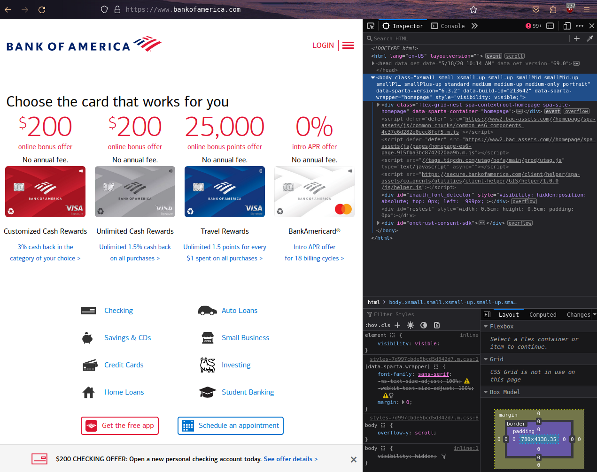
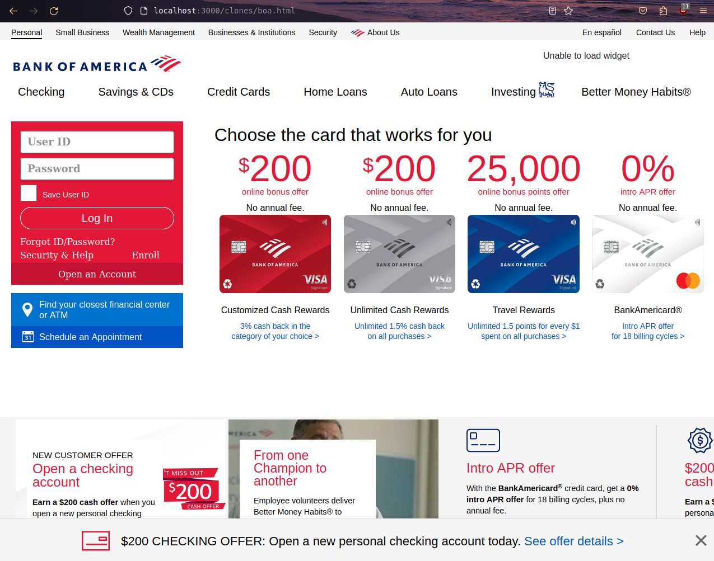

<< Back
Cloning the Bank of America homepage
10 August 2024
The Bank of America homepage, like any index webpage for a bank or other financial service, is undoubtedly one of the more tempting webpages that threat actors will try to clone. With enough effort, and a gullible enough target, a webpage clone could suffice in extracting user credentials.
Bank of America probably knows this, and their developers have taken subtle but effective measures to ensure their homepage, https://www.bankofamerica.com/, can't be so easily cloned.
In this post, I try to clone the page for myself, and reveal here what I found along the way.
The easy way out
The first thing to try is to be lazy and copy the entire HTML as it appears in "Inspect element."
That yields a very similar result to the original:

But you'll immediately notice several things wrong with
this. First of all, the font is wrong. Bank of America
seems to use a proprietary "cnx" family of fonts, and
while I was able to find the source URLs for those
fonts, they refused to load when I tried to replicate
the
@font-face
configuration.
/* Snippet of https://www2.bac-assets.com/spa/widgets/global-search-public-widget/2.0.0/spa-assets/css/styles-5a3ed7c942389fca8dca.m.css */
@font-face {
font-family: "cnx-regular";
src: url(https://www2.bac-assets.com//homepage/spa-assets/fonts/cnx-regular.47c16abe6b264fc27f56.eot);
src: url(https://www2.bac-assets.com//homepage/spa-assets/fonts/cnx-regular.47c16abe6b264fc27f56.eot?#iefix) format("embedded-opentype"),
url(https://www2.bac-assets.com//homepage/spa-assets/fonts/cnx-regular.b3dda94b5c9ccf13d9a0.woff2) format("woff2"),
url(https://www2.bac-assets.com//homepage/spa-assets/fonts/cnx-regular.dcbc38b41fb754b2a149.woff) format("woff"),
url(https://www2.bac-assets.com//homepage/spa-assets/fonts/cnx-regular.c3f88485975bf9dd0a6f.ttf) format("truetype");
font-weight: 300;
font-style: normal;
font-variant: normal;
}Meanwhile, my clone defaults to Roboto — and I got the impression that, when actually building this page from scratch, that was the best I was going to get.
An interesting thing to note is that when a user attempts to log in on this clone, the user is still redirected to the actual Bank of America screen, as one would expect from a normal BofA login.
So really, what a potential threat actor would need to
do is recreate that red box, and insert in there some
<form> that
sends the inputs to the desired destination.
In terms of pure frontend, this box is not so difficult
to replicate. It's two
<input>s, a
checkbox, a "Log In" button, and some spare links at the
bottom.
But the real issue is going into that copy-pasted HTML
code and (a) trying to find out where the hell the code
for that red box even is, out of 1300-plus lines, and
(b) then making that new customized
<form> of yours
actually work. The first part was the easy part, and
even that took a while, with all the nooks and crannies
and nested divs. As for the second part, I made a
half-hearted attempt to edit the "Log In" button so that
it would direct the user to the music video for "Never
Gonna Give You Up" by Rick Astley, but I couldn't get it
to work. There was some operation happening that ensured
the form was always sent to the real Bank of America
login page. It remains elusive, at least for me, as to
whether bypassing that is possible.
Conclusions
In attempting to clone the Bank of America homepage, I learned the hard way about the complexity and sophistication of modern web security. While copying a webpage's basic structure can be relatively straightforward, achieving an exact replica is significantly more challenging due to custom fonts, intricate CSS, and advanced JavaScript functionalities.
As someone who, by all measures, is still a beginner when it comes to web development, it is humbling and inspiring to know there is such incredible depth to secure frontend building that I have yet to even be aware of. Further research could delve into advanced web security techniques, proprietary technologies, form redirection mechanisms, and the ethical implications of web cloning, contributing to a deeper understanding of both the challenges and best practices in creating and safeguarding web content.